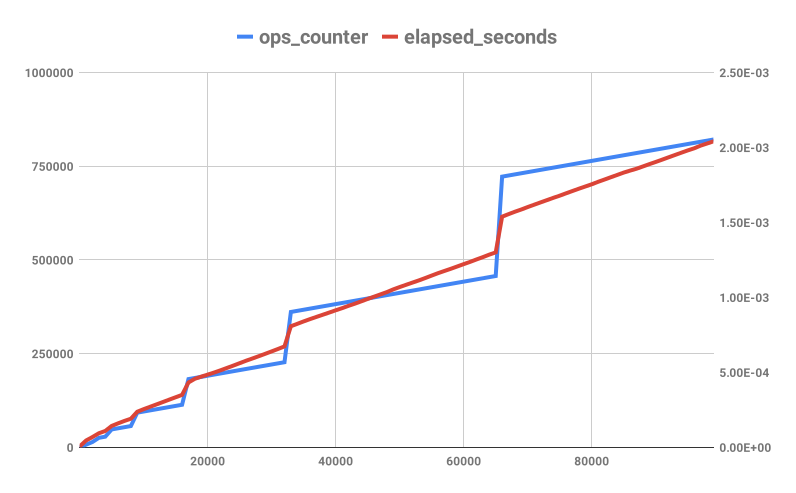

Simple Vector (Amortized) Big-O and Timing video (37 minutes)
In our push_back code, we only have to create a new array and copy things when the array is full. Even though a single call to push_back is O(n) because it will do O(n) copies, in the worst case, push_back is not always that bad. What's the big-O of calling push_back O(n) times?
To find out, let's look at how many copies are done when we run out of capacity. We know that since we're doubling the array each time, we first resize after 2 elements, 3 elements, 5 elements, 9 elements, 17 elements, 2^k + 1 elements, etc. Here we'll create a table showing the number of elements inserted and count up the number of copies that we have to do per resize and in the last column, we'll sum up the total number of copies done so far:
| size=n (smallest) | size=n (biggest) | capacity | copies to resize | total copies |
|---|---|---|---|---|
| 0 | 1 | 1 | 0 | 0 |
| 2 | 2 | 2 | 1 | 1 |
| 3 | 4 | 4 | 2 | 3 |
| 5 | 8 | 8 | 4 | 7 |
| 9 | 16 | 16 | 8 | 15 |
| 17 | 32 | 32 | 16 | 31 |
| 33 | 64 | 64 | 32 | 63 |
| 65 | 128 | 128 | 64 | 127 |
| 129 | 256 | 256 | 128 | 255 |
| 2^(k - 1) + 1 | 2^k | 2^k | 2^(k - 1) | 2^k - 1 |
| n | 2n - 2 | 2n - 2 | n - 1 | 2n - 2 |
The number of copies we have to do is O(n) for single push_back because we might have to copy the n elements we've inserted so far... but it's also O(n) to call push_back n times. So, if you divide the big-O of doing the operation n times by n, we get that push_back is amortized O(n) / n = O(1).
Let's see if the theory holds up. Here we'll add an ops_counter to our TemplateVector::push_back to see if it actually scales like we expect and we'll run a timer to see the actual time and plot them both on a graph to see how the real running time lines up with all the operations we're counting.
#pragma once
template <typename T>
class TemplateVector {
int capacity, size_;
T* values;
public:
int ops_counter;
TemplateVector() : capacity(1), size_(0), ops_counter(0) {
values = new T[capacity];
}
~TemplateVector() {
delete[] values;
}
void push_back(const T& value) {
++ops_counter;
if (size_ >= capacity) {
// Create a new bigger
ops_counter += 2 * capacity + 3;
const int new_capacity = 2 * capacity;
T *new_lines = new T[new_capacity];
// Copy everything to the big array
for (int i = 0; i < size_; ++i) {
++ops_counter;
new_lines[i] = values[i];
}
// Delete old array
ops_counter += capacity;
delete[] values;
// Make lines point to new array
ops_counter += 2;
values = new_lines;
capacity = new_capacity;
}
++ops_counter;
values[size_] = value;
++ops_counter;
++size_;
}
T* begin() {
return values; // same as &strs[0]
}
T* end() {
return values + size_; // same as &strs[size]
}
T& operator[](int index) {
return values[index];
}
int size() {
return size_;
}
};#include <iostream> // std::cout, std::endl
#include <chrono>
#include <vector>
#include "template_vector.h"
using namespace std;
class SimpleTimer {
std::chrono::time_point<std::chrono::steady_clock> start_time;
public:
void start() {
start_time = std::chrono::steady_clock::now();
}
// Return the number of seconds since .start() was called
double elapsed_seconds() const {
std::chrono::duration<double> diff(std::chrono::steady_clock::now() - start_time);
return diff.count();
}
};
int main(int argc, const char *argv[]) {
TemplateVector<int> vec;
SimpleTimer timer;
cout << "n,ops_counter,elapsed_seconds" << endl;
timer.start();
for (int i = 0; i < 100000; ++i) {
vec.push_back(i);
// Only print out one in every thousand lines so the output isn't huge
if (i % 1000 == 0) {
cout
<< vec.size() << "," << vec.ops_counter << ","
<< timer.elapsed_seconds() << endl;
}
}
return 0;
}$ clang++ -pedantic -Wall -lm -std=c++20 -o vector_demo vector_demo.cpp
$ ./vector_demo
n,ops_counter,elapsed_seconds 1,3,3.73e-06 1001,7145,8.0793e-05 2001,14246,0.000123865 3001,25443,0.000172451 4001,28443,0.000206316 5001,47832,0.000261176 6001,50832,0.000296039 7001,53832,0.000327427 8001,56832,0.000357374 9001,92605,0.000428237 10001,95605,0.000457861 11001,98605,0.000486652 12001,101605,0.000515829 13001,104605,0.000546548 14001,107605,0.000576871 15001,110605,0.000608981 16001,113605,0.000639955 17001,182146,0.000753521 18001,185146,0.00078715 19001,188146,0.000817557 20001,191146,0.000846325 21001,194146,0.000876049 22001,197146,0.000904843 23001,200146,0.00093437 24001,203146,0.000964235 25001,206146,0.000992735 26001,209146,0.00101962 27001,212146,0.00104742 28001,215146,0.00107464 29001,218146,0.00110156 30001,221146,0.00112869 31001,224146,0.0011562 32001,227146,0.00118743 33001,361223,0.00139456 34001,364223,0.0014303 35001,367223,0.00145918 36001,370223,0.00148836 37001,373223,0.00151714 38001,376223,0.00154555 39001,379223,0.00157474 40001,382223,0.00160408 41001,385223,0.00163151 42001,388223,0.00166003 43001,391223,0.00168703 44001,394223,0.00171618 45001,397223,0.0017457 46001,400223,0.00177453 47001,403223,0.00184313 48001,406223,0.00187552 49001,409223,0.00190766 50001,412223,0.00193755 51001,415223,0.00196652 52001,418223,0.00199574 53001,421223,0.00202454 54001,424223,0.00205343 55001,427223,0.00208201 56001,430223,0.0021113 57001,433223,0.00214192 58001,436223,0.00218681 59001,439223,0.00222009 60001,442223,0.00224857 61001,445223,0.00227665 62001,448223,0.00230668 63001,451223,0.002337 64001,454223,0.00237024 65001,457223,0.00240026 66001,722372,0.0027608 67001,725372,0.00280451 68001,728372,0.00283838 69001,731372,0.00286873 70001,734372,0.00289756 71001,737372,0.00292795 72001,740372,0.00295652 73001,743372,0.00298558 74001,746372,0.00301462 75001,749372,0.00304403 76001,752372,0.00307368 77001,755372,0.00310382 78001,758372,0.00313313 79001,761372,0.00316301 80001,764372,0.00319289 81001,767372,0.0032251 82001,770372,0.00325545 83001,773372,0.00328618 84001,776372,0.00331629 85001,779372,0.00334517 86001,782372,0.0033723 87001,785372,0.00340132 88001,788372,0.00343049 89001,791372,0.00345945 90001,794372,0.00348842 91001,797372,0.00351695 92001,800372,0.0035482 93001,803372,0.00357716 94001,806372,0.00360612 95001,809372,0.003635 96001,812372,0.00366493 97001,815372,0.0036965 98001,818372,0.00372402 99001,821372,0.00375261
